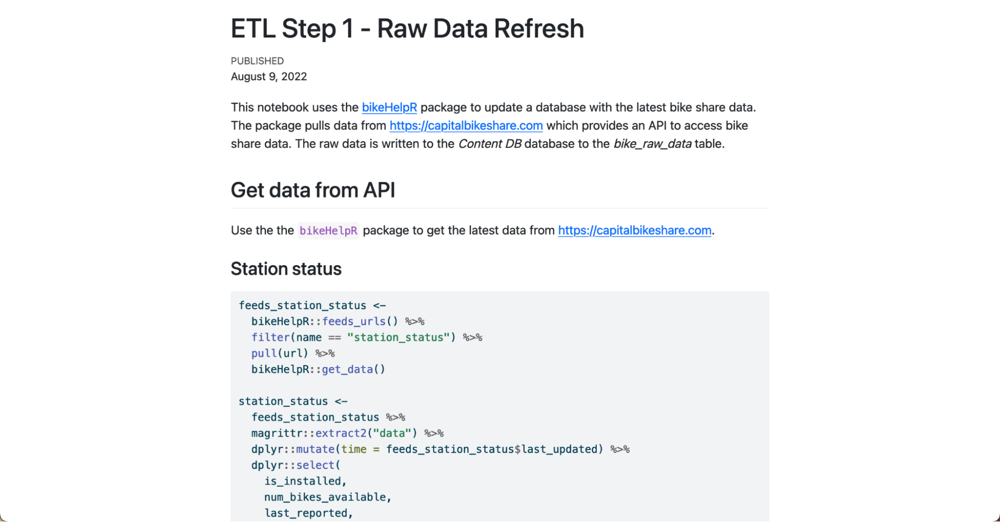
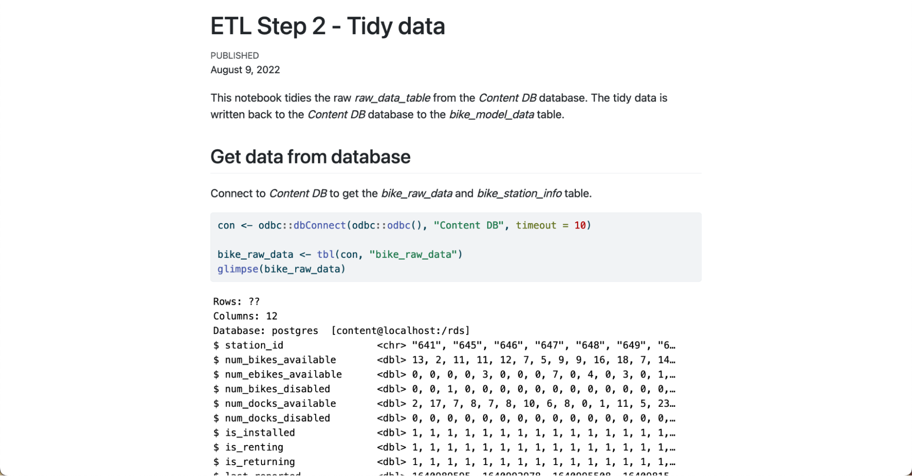
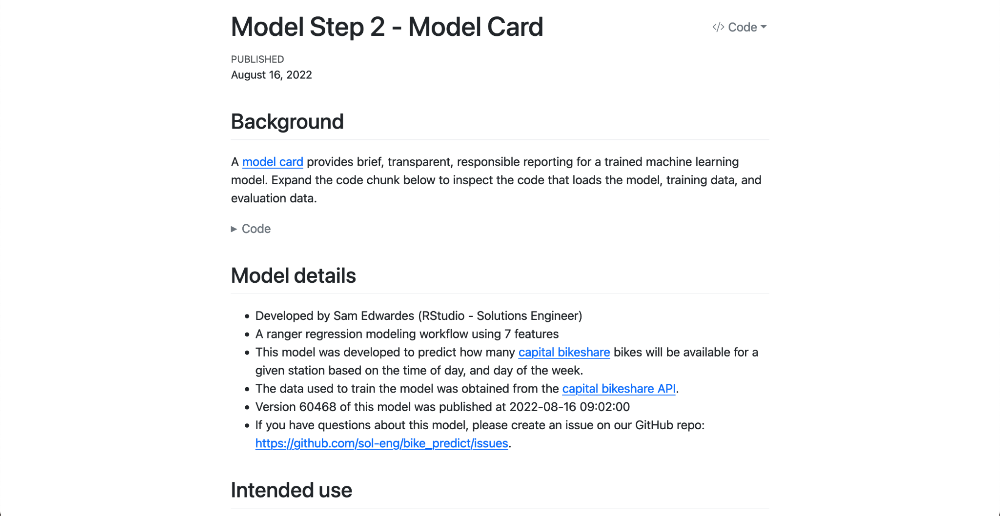
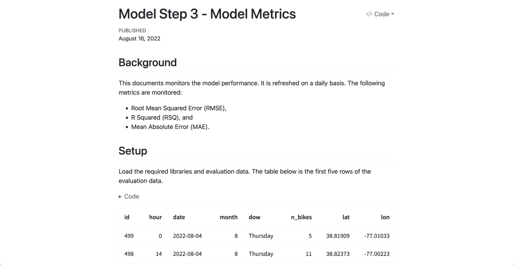
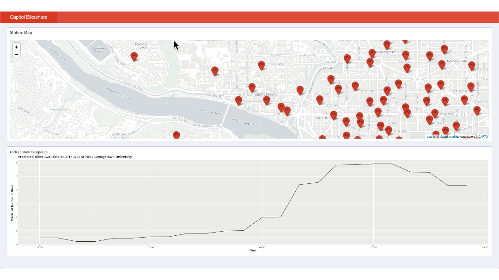
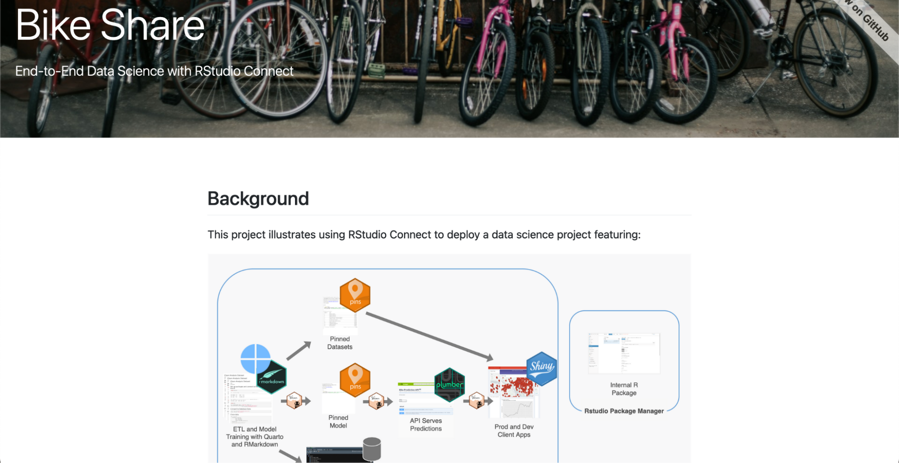

2022-09-13
Machine learning operations (MLOps) are a set of best practices for running machine learning models successfully in production environments. Data scientists and system administrators have expanding options for setting up their pipeline. However, while many tools exist for preparing data and training models, there is a lack of streamlined tooling for tasks like putting a model in production, maintaining the model, or monitoring performance.
Enter vetiver, an open-source framework for the entire model lifecycle. Vetiver provides R and Python programmers with a fluid, unified way of working with machine learning models.
Our Solutions Engineering team developed a Shiny app for Washington D.C.’s Capital Bikeshare program a few years ago. This app provides real-time predictions of the number of bikes available at stations across the city. The end-to-end machine learning pipeline feeding the app uses R to import and modify data, save it in a pin, develop a model, then move the model to a deployable location. Alex Gold delivered a presentation on this workflow in 2020.
Sam Edwardes updated the project to apply Quarto and the new vetiver framework. Previously, we used R Markdown and a combination of one-off functions and scripts for each MLOps task. Using the latest from RStudio:
We will walk through the updated pipeline below. To see the entire project, check out the Bike Predict page on solutions.rstudio.com.
The Shiny app predicts the number of bikes at a station in the near future based on real-time streaming data from an API. The steps involved are:
The project shows an exciting set of capabilities, combining open source with RStudio’s professional products.
1. Create a custom package for pulling data
Capital Bikeshare has an API that publishes real-time system data. We created a set of helper functions for pulling the data. To increase efficiency, we wanted to reuse and share these functions.
For that, we created the bikehelpR package to house, document, and test the functions we used. To deploy the package, we used RSPM. RSPM makes it easy to create a package and have it available via install.packages() for everybody on our team.
2. Extract, transform, load process in R
The first step of the pipeline pulls the latest data from the Capital Bikeshare API using the bikehelpR package. We write the raw data to the Content Database’s bike_raw_data and bike_station_info tables.
The station info is also written to a pin. This pin will be accessed by the Shiny app so that it can extract the bike station info without connecting to the database. Read more about “production-izing” Shiny with pins.

ETL Step 1 - Raw Data Refresh Quarto Document
3. Tidy and join datasets
We tidy the bike_raw_data table using tidyverse packages. Then, we join it with the bike_station_info table and write the output into the Content Database’s bike_model_data table.

ETL Step 2 - Tidy Data Quarto Document
4. Train and deploy the model
We use the bike_model_data table to train and evaluate a random forest model. The model is saved to RStudio Connect as a pin (using vetiver) and then it is converted into an API endpoint (also using vetiver). By using vetiver to pin and deploy our model, we ensure a consistent approach across the organization for how we pin, version, and deploy machine learning models. Then, we deploy the API to RStudio Connect.
Model Step 1 - Train and Deploy Model
5. Create a model card
Next, we evaluate the training and evaluation data using various methods. Vetiver’s model card template helps document essential facts and considerations of the deployed model.

6. Monitor model metrics
We can document model performance using vetiver and write the metrics to a pin on RStudio Connect. With these functions, we can monitor for model performance degradation. Using vetiver to monitor model performance again ensures a consistent approach to model governance across teams.

7. Deploy a Shiny app that displays real-time predictions
We use the API endpoint to serve predictions to a Shiny app interactively. Clicking on a station shows us a line graph of the time and predicted number of bikes.

8. Create project dashboard
This project is composed of many different tasks. We wanted a single place to share the full context and content with others. We created a dashboard made with connectwidgets to link to the entire project. This makes it easy for anybody new to the Bike Share app to understand its purpose and steps involved.

See the entire updated pipeline here:

We hope that you enjoyed this example of using vetiver, pins, and RStudio Connect to create an end-to-end machine learning pipeline. Folks in machine-learning-heavy contexts can use vetiver to streamline their work and easily “production-ize” content.